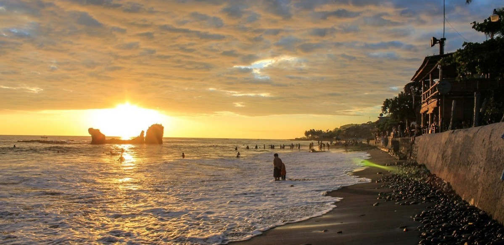
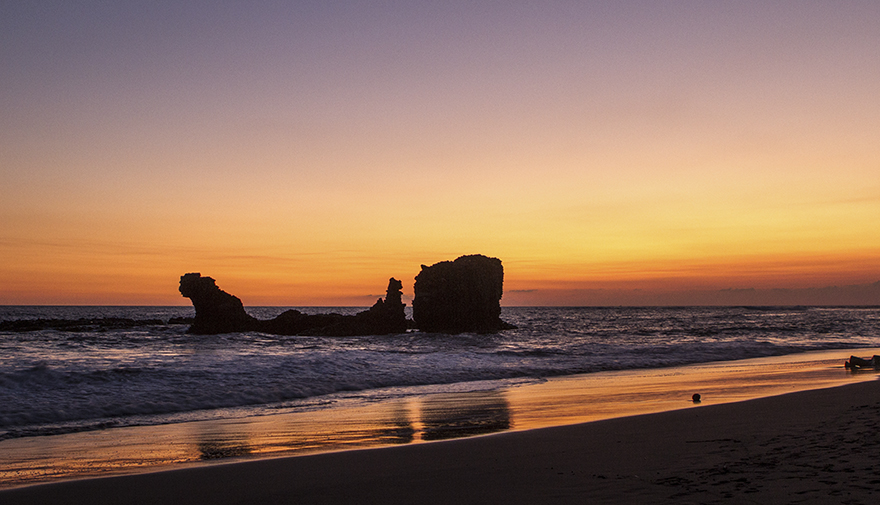
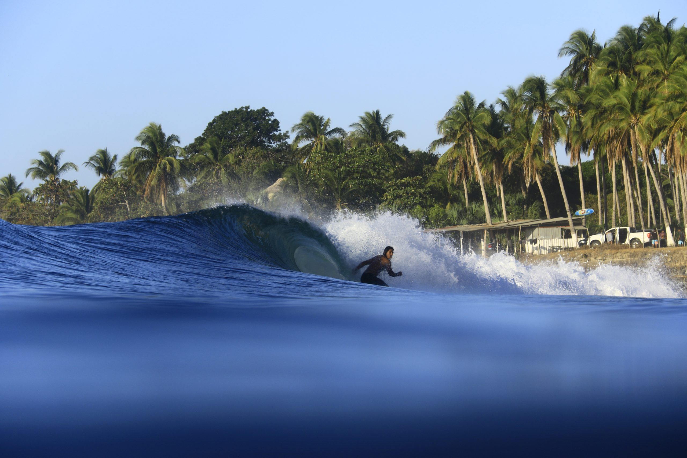

Playa El Tunco (El Tunco beach)




La playa El Tunco caracteriza por sí misma a todo el estado de El Salvador: es el mar, el sol, pequeñas olas para el surf y la música. Reggae, salsa, atardeceres pintorescos y deportes extremos: estas son las cosas que atraen anualmente a muchos turistas de diferentes generaciones en El Tunco.